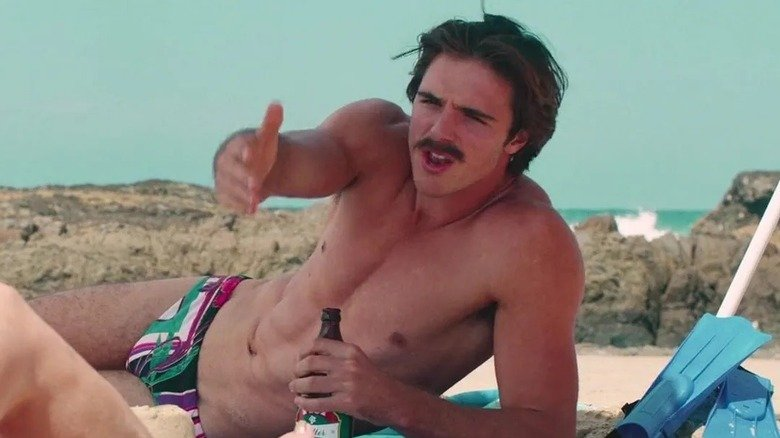
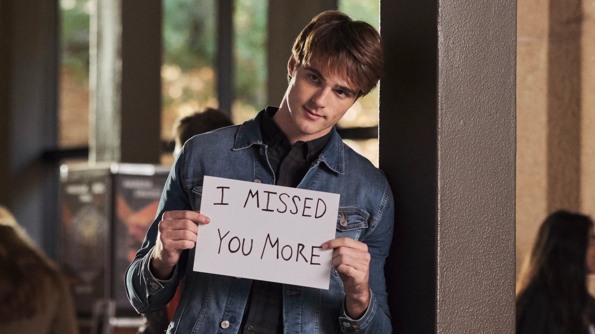

While brainstorming ideas for my first official FemiNICHE article, I didn't have to think for long. I had a slight gap between the next award show and the start of The Bachelor and thought to myself, "Jacob Elordi is huge right now, and for selfish reasons, I wouldn't mind watching every project he's in this weekend!"
So I did.
1. Swinging Safari (2018)

Jacob Elordi as Rooster in Swinging Safari (2018).
Set in the 1970s, Swinging Safari follows 14-year-old Australian, Jeff Marsh, when a 200-ton blue whale washes up on the shore of his local beach while also highlighting the sexual revolution of the small town he lives in. The kids get drunk and make stunt films. The teens get drunk and make out. The adults get drunk and have an orgy while their children are upstairs. Unfortunately, two of their children do see this happen.
Jacob has just a minor role in this movie — his elapsed screen time being under 10 minutes — but he looks great while doing it. Pop superstar Kylie Minogue is in this movie for a longer amount of time. In one of the two scenes Jacob is in, he's getting head from the main character's sister before performing the Heimlich maneuver on her mother. This character then gets pregnant at the very end of the movie and he calls her fat. Oh, and at the end? They blow up the whale. For me, Swinging Safari is a skip in Jacob's long list of projects.
2. The Kissing Booth (2018)
Jacob Elordi as Noah Flynn in The Kissing Booth (2018).
You can only imagine my excitement when I realized I had to rewatch this terrible movie that made Elordi feel "dead inside". Elordi told GQ magazine that he didn't want to make those movies before he made those movies, that they were ridiculous and not universal — just an escape.
Well, Jacob is in great hands as these movies make me feel dead inside too. The Kissing Booth trilogy — yes, there are three — are Netflix movies based on the Wattpad series of the same name. And oh boy, are they hard to rewatch.
Elle Evans (Joey King) and Lee Flynn (Joel Courtney) are best friends who were born on the same day at the same time, basically treating each other as siblings. They had to make a set of rules to maintain their friendship including rule number 9, Lee's older brother, Noah, being off-limits! Don't worry though, Elle would never. Until Noah (Elordi) got extremely hot and he became her first kiss at the school's kissing booth!
As much as I loved this movie when it first came out, I'm surprised it didn't turn me into a brainless pre-teen zombie. The only positive thing about this movie is that Jacob Elordi looks great. Though I would say it IS a must-watch for new Elordi fans, The Kissing Booth was not a good movie and was clearly written during the age of Wattpad.
3. The Mortuary Collection (2019)
Jacob Elordi as Jake in The Mortuary Collection (2019).
"What if Jacob Elordi was pregnant?": The Film
The Mortuary Collection is an anthology movie, highlighting a few horror-themed shorts in a runtime of 110 minutes. In his first scene, Jake (Jacob Elordi) demonstrates to a group of women how to put a condom on a banana. However, his goal is to help his friends get laid by handing out condoms to young freshmen the night before a huge frat party. A strange girl Jake met on campus shows up to the party, so of course they hook up. Going against his morals, Elordi rips off his condom and has unprotected sex for several hours. Like seriously, they show a clock during a montage and it goes on for more than 7 hours.
The next day Jake is throwing up like crazy and decides to visit his doctor. The doctor, shocked, informs him that he is PREGNANT. What the actual hell? So of course he takes a "Plan C" pill with a chaser of Pepto-Bismol but is still throwing up every 5 minutes. Surprise! It's been a day and the baby is already growing like crazy. Jake lifts his shirt and he has a giant pregnant belly.
I then was forced to watch Jacob Elordi with a giant stomach and melted face give birth at this girl's house. There's an actual shot of his, and I'm sorry for this language, penis exploding everywhere so the baby can come out. It turns out there are like 26 of these LITERAL demon spawn and Jacob's character was one of the many victims. If you want to see this man shirtless, watch until he finds out he's pregnant. Other than that, it's a complete vomit fest that I would skip over any day.
4. The Very Excellent Mr. Dundee (2020)
Jacob Elordi as Chase in The Very Excellent Mr. Dundee (2020).
Admittedly, I have never seen Crocodile Dundee so I was confused when I was supposed to know this man. The Very Excellent Mr. Dundee follows Paul Hogan's (Crocodile Dundee) journey to restore his reputation before he gets knighted. This movie is filled with references to Crocodile Dundee that I couldn't fully enjoy.
Full of cameos of stars including Olivia Newton-John (RIP), Chevy Chase, and John Cleese, this movie doesn't take itself too seriously and seems like it was a ball to film. This movie seems like one that perhaps my grandpa would enjoy. I, however, got bored rather quickly as the movie was geared towards Dundee fans. This was another movie where Jacob's screen time as an aerobics instructor ran under just about 5 minutes, so unless you're a huge Crocodile Dundee fan, I'd skip this one.
5. The Kissing Booth 2 (2020)

Jacob Elordi as Noah Flynn in The Kissing Booth 2 (2020).
"We're so back!" I would exclaim if this movie was good.
In part 2 of the series Elordi hated to film, he had to state that he WASN'T miserable while filming because of his lackluster performance. He and his co-star, Joey King, dated shortly after the first film's release but clearly broke up before filming The Kissing Booth 2. This movie is somehow worse than the first entry.
King sports a terrible wig (as she was filming The Act), Taylor Zakhar Perez joins the cast, and Jacob Elordi cries for help with his eyes. The big plot of the movie is that Elle is torn between going to college with her best friend, Lee, or going to college with her boyfriend — and previously established best friend's brother — Noah. Noah and Elle struggle to maintain a long-distance relationship as she starts to develop feelings for Zakhar Perez's character, Marco, and she starts to believe that Noah is cheating on her.
In one of the only scenes I can remember, Elle whispers to Noah at dinner that she's going to treat him like her own personal jungle gym. The scene then cuts to them having hot, steamy… missionary sex. Lame. The two are still together at the end of the film, despite Marco being 100% the better option for Elle.
6. 2 Hearts (2020)
Jacob Elordi as Chris Gregory and Tiera Skovbye as Samantha in 2 Hearts (2020).
Finally! Time for a good, old-fashioned romance— Oh, he ends up braindead? Oh!
2 Hearts claims to be based on the true story of Leslie and Jorge Bacardi and yes, although this is not mentioned in the film, Jorge's family owns the alcohol brand, Bacardi.
Elordi plays Chris, who is wheeled into the emergency room in the first 5 minutes of the movie. Is this a dream? Have I begun to hallucinate fake Jacob Elordi movies at this point? And oh my god, is that POLLY COOPER? Chris ends up falling in love with a girl named Samantha (Tiera Skovbye) but falls unconscious suddenly while hanging out with her and his friends in his dorm room. And yes, like I said earlier, Chris ends up brain-dead at 19 and his lungs are donated to Jorge, another main character of the film.
Though 2 Hearts is based on a real story, the movie plays out like a bad soap opera. One of those movies made to make you cry and think about the good that is left in the world.
7. The Kissing Booth 3 (2021)
Jacob Elordi as Noah Flynn in The Kissing Booth 3 (2021).
"Please free me of these terrible movies." — Jacob Elordi (and also, Gina-Marie).
Are we done yet? Wait… this is the last one? I'M FREE! Elle still hasn't decided what college she wants to attend so unfortunately, we have to watch a full movie about this AGAIN. Mind you, Noah goes to Harvard. I don't even know how he made it in.
Jacob's in this movie long enough to not break his contract, but our favorite option 2 is back! We love you, Marco! Marco and Noah fight on the beach over Elle and it might be my favorite scene. Fight over me next!
In the end, Noah and Elle break up, and Elle decides she wants to study game design at the University of Southern California. The series ends with a 6-year time jump and Elle and Noah ride the coastline of California on their motorcycles. Somehow, this movie is just fine enough to be the best entry in the trilogy.
8. Deep Water (2022)
Jacob Elordi as Charlie De Lisle and Ana De Armas as Melinda Van Allen in Deep Water (2022).
This film seeks to ask you the deep question, "Hey, remember when Ben Affleck and Ana De Armas dated? Yeah? Well, why?" I am honestly so shocked that these two were dating while filming this due to the zero chemistry between them. Ana De Armas looks gorgeous and Ben Affleck has that "I just ate a warhead but I won't let it affect me" face during the movie.
In the "erotic" (if you want to call this erotic) psychological thriller, Ben and Ana have an open marriage where Ben Affleck kills Ana's lovers? It does not sound very open to me, but you do you. Elordi plays one of Ana's lovers and piano teacher, Charlie. At this point, I've seen Jacob Elordi naked more times than I've seen anyone else naked. Ben Affleck, who also must be seriously sick of this movie as well, drowns Charlie in their pool.
This movie is the most sex-less erotic "film" I have ever seen with some of the worst acting as well. Will this ever get better? Please throw me a bone here.
9. Priscilla (2023)
Jacob Elordi as Elvis Presley and Cailee Spaeny as Priscilla Presley in Priscilla (2023).
This movie is 100% why Jacob Elordi should be getting his flowers. As a long-time fan and follower of Priscilla Presley, I was elated to hear they were turning her book, Elvis & Me into a motion picture directed by Sofia Coppola.
I was lucky enough to experience Priscilla in theaters and had a great experience. Jacob Elordi and Cailee Spaeny brought the Presley family's real story to light in a gorgeous way. Though hard to understand at times, Elordi was outstanding as Elvis, which is surprising since he claims he only knew Elvis from Lilo & Stitch.
Priscilla Presley told Vanity Fair that Elordi's Elvis voice stunned her, saying he sounded just like Elvis. Priscilla gave Jacob Elordi a real chance to shine as an actor, receiving critical acclaim as soon as the movie came out.
10. Saltburn (2023)
Jacob Elordi as Felix Catton in Saltburn (2023).
WE DID IT, JOE! I enjoyed Saltburn!
If you made it this far, I don't want to bore you with a review of a movie you've seen plastered all over social media for the past few months, but I did like it. Though not completely solid with its premise, Saltburn will be seen as the Cruel Intentions of its time.
Elordi is given good material to work with and is supported by a great cast featuring Barry Keoghan and Rosamund Pike, truly the bisexual dream. The soundtrack is brilliant, the sets are gorgeous, and Saltburn is eerie and erotic. If you weren't already intrigued by the viral bathtub scene, give Saltburn a watch.
In Conclusion
Jacob Elordi may have had a tumultuous career in only 6 years, but it's only looking up for him now. He was recently cast as the monster in Guillermo Del Toro's Frankenstein, replacing Andrew Garfield, and has 6 more upcoming projects below his belt.
Although this article did take me many hours — hours I wish I could gain back watching some movies (KISSING BOOTH) — I am so excited to see where Elordi's career goes next.